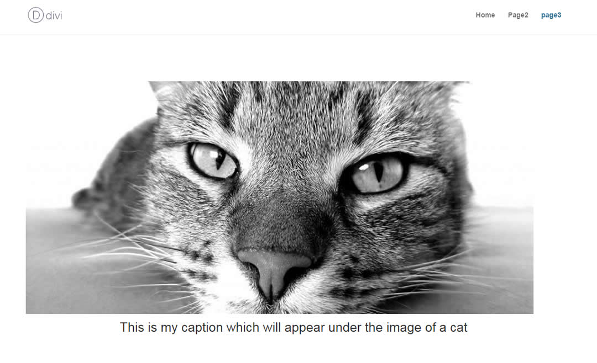

AgroLens is a Python-based tool designed to streamline agricultural data collection and analysis.
It intelligently gathers agro data, including fertilizer inventory and demand planning,
providing actionable insights to optimize farming practices and resource management. This
project demonstrates my ability to create robust data-driven solutions for the agricultural
sector, combining technical expertise with a passion for sustainable farming.

MallInsights is a data-driven project focused on understanding customer behavior in a retail
environment. By applying the K-means algorithm, this tool segments customers based on their
annual income and spending habits within the mall. These insights enable businesses to tailor
their marketing strategies, effectively targeting specific customer groups and maximizing
revenue. This project showcases my skills in data analysis, machine learning, and customer
segmentation, highlighting the potential for data to drive informed decision-making in the
retail sector.

This innovative project leverages advanced deep learning techniques to automatically generate
descriptive captions for images. By harnessing the power of Convolutional Neural Networks (CNNs)
and Long Short-Term Memory (LSTM) networks, the system creates accurate and contextually rich
captions for images.
This project focuses on building a machine learning pipeline for classifying chest cancer cases.
It utilizes MLFlow for experiment tracking and DVC (Data Version Control) for managing datasets and models.
The goal is to create an efficient and reproducible workflow for medical image classification.